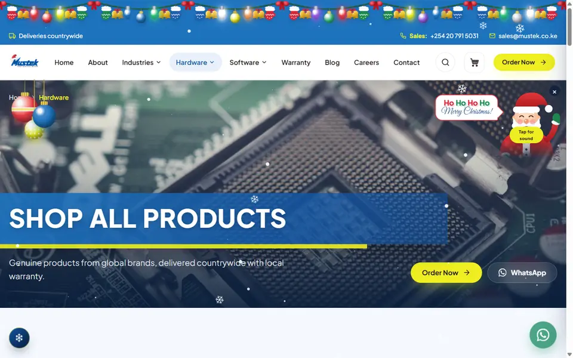

Mustek East Africa: the backend behind a hardware distributor's website
Mustek sells POS systems, coffee machines, UPS and solar products across East Africa. I built and run the API, the admin back-end, the security monitoring and the production server behind their website.
The problem
Mustek needed a new website where customers could browse the catalogue, order and get a quote, and where staff could manage products, read orders and publish content, all on a small shared server and without a dedicated operations team.

What I built
- Catalogue API: categories, products with galleries and specifications, bulk import (500 rows, all-or-nothing with per-row errors), and paged search with cached answers.
- Orders and enquiries: trolley orders and quotes saved for the sales team, an email alert to sales, and a branded confirmation email to the customer.
- Careers: vacancies that close on their own after the closing day (Nairobi time), searchable by words, department, location and type, and job applications with CV upload, confirmation emails and an HR-only review list.
- Staff roles: admin, sales, marketing and HR, each with exact permissions; every change goes into an audit log.
- Editable policy pages: warranty, privacy and cookie policies written for what the site actually does.
Security
- A security dashboard with an IP-geolocation attack map, failed-login tracking, probe detection and email alerts for crashes, expiring certificates, missing backups and full disks.
- SQL injection defence in depth: parameterised queries, table and column names only from fixed lists, input validation with Zod, and a dedicated injection test.
- The API connects as a least-privilege database account that can read and write rows but cannot drop or alter tables; a 10-second query limit stops runaway queries.
- CVs are stored outside the public folder, checked by their file contents (not their names), downloadable only by HR, and each download is audited.
Why it matters: even if a bug slipped through, a stolen request couldn't drop a table, a slow query couldn't freeze the site, and an attack would show up on the dashboard.
Performance
- Measured the site on a phone first: about 11 MB on the home page, most of it video and images.
- Built an automatic WebP pipeline: every uploaded photo gets a full-size and a 400 px copy, served only to browsers that accept WebP. Photos became about 77% smaller, thumbnails 92% smaller (around 3 KB).
- The whole catalogue is served from memory, pre-compressed with gzip and Brotli, and rebuilt only when staff change something.
Privacy & personalisation
The client wanted search to show each customer what they're interested in first. Tracking people who decline would break Kenya's Data Protection Act, so I designed it with consent at the centre:
- Everyone gets "popular first", from anonymous per-product counts with no identifier and no IP address stored.
- Only visitors who click Accept get personal ranking, from what they view, add and search for.
- Choosing "Essential only" later deletes that history immediately; everything else expires after 12 months.
Operations
- Runs on a 2 GB DigitalOcean server shared with other apps: Docker for PostgreSQL, pm2 with a memory cap, nginx with TLS.
- Nightly database and upload backups, a one-command deploy that backs up, pulls, migrates, restarts and health-checks, and a read-only server checker that lists anything missing.
- A written runbook so the whole system can move to a new server with nothing left out.
What I learned
- Deploy scripts need tests too: a backup script that stopped on one missing setting taught me to make every optional setting truly optional.
- Measuring first (page weight on a real phone) points straight at the fixes that matter.
- Saying "no, but here's how" to a request that breaks the law builds more trust than saying yes.